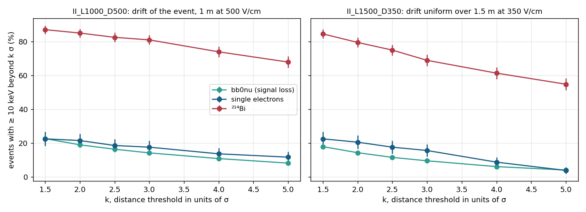
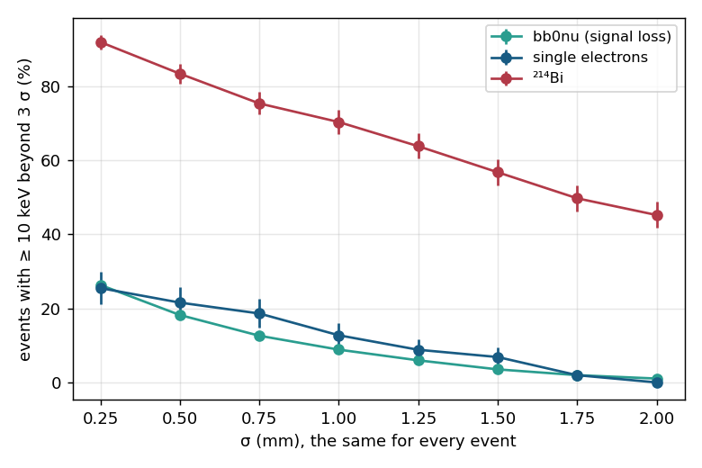
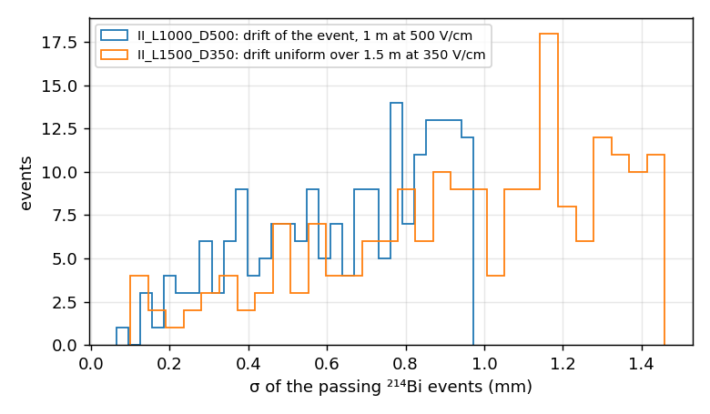

Method
The events are those of the 2 mm study (II_L1000_D500_P2) that pass the network at 80 % signal: the test bb0nu events of the training, its test single electrons, and every selected ²¹⁴Bi event. For each one the Monte Carlo truth gives the energy of the secondary deposits (every hit not on the main track, in the simulated box) at a distance of at least d from the nearest main-track hit, on a grid of 0.25 mm (scripts/iitaca/prepare_iitaca_truth.jl, results/iitaca/II_L1000_D500_P2_truth_profile).
An event is flagged when it holds at least Ethr of secondary energy beyond k σ from the main track, σ being the thermal spread of the ions after the drift of the event, σ = √(2 kB T L / e E): a readout blurred only by diffusion would show a detached deposit there. Two drifts: the one of the event in the production (100 cm at 500 V/cm, σ up to 1.00 mm) and a drift drawn uniformly over 150 cm at 350 V/cm (II_L1500_D350, σ up to 1.46 mm). The energy beyond k σ is read at the first grid point not below k σ, so it is never overestimated. The flagged fraction of the backgrounds is the most a diffusion-limited readout could add to the rejection of the 2 mm pads and the network; the flagged fraction of bb0nu is the signal it would cost. No readout noise, no threshold per pixel and no network are involved: this is a bound, not a prediction.
| Sample | selected events with a score | passing the network at 80 % signal |
|---|---|---|
| bb0nu (signal loss) | 13503 | 10802 |
| single electrons | 11872 | 102 |
| ²¹⁴Bi | 6188 | 199 |
Flagged fractions

Rejection factors are 1 / (1 − flagged fraction) on top of the current selection; the signal efficiency after is 80 % × (1 − flagged fraction of bb0nu).
| Drift | E_thr (keV) | k | bb0nu (signal loss) | single electrons | ²¹⁴Bi | single-electron rejection × | ²¹⁴Bi rejection × | signal efficiency after |
|---|---|---|---|---|---|---|---|---|
| II_L1000_D500: drift of the event, 1 m at 500 V/cm | 5 | 1.5 | 23.5 ± 0.4 % | 23.5 ± 4.2 % | 86.9 ± 2.4 % | 1.31 | 7.65 | 61.2 % |
| 5 | 2.0 | 19.5 ± 0.4 % | 22.5 ± 4.1 % | 85.4 ± 2.5 % | 1.29 | 6.86 | 64.4 % | |
| 5 | 2.5 | 16.8 ± 0.4 % | 19.6 ± 3.9 % | 82.4 ± 2.7 % | 1.24 | 5.69 | 66.6 % | |
| 5 | 3.0 | 14.5 ± 0.3 % | 18.6 ± 3.9 % | 80.9 ± 2.8 % | 1.23 | 5.24 | 68.4 % | |
| 5 | 4.0 | 11.1 ± 0.3 % | 14.7 ± 3.5 % | 73.9 ± 3.1 % | 1.17 | 3.83 | 71.1 % | |
| 5 | 5.0 | 8.4 ± 0.3 % | 12.7 ± 3.3 % | 67.8 ± 3.3 % | 1.15 | 3.11 | 73.3 % | |
| 10 | 1.5 | 22.7 ± 0.4 % | 22.5 ± 4.1 % | 86.9 ± 2.4 % | 1.29 | 7.65 | 61.8 % | |
| 10 | 2.0 | 19.0 ± 0.4 % | 21.6 ± 4.1 % | 84.9 ± 2.5 % | 1.27 | 6.63 | 64.8 % | |
| 10 | 2.5 | 16.5 ± 0.4 % | 18.6 ± 3.9 % | 82.4 ± 2.7 % | 1.23 | 5.69 | 66.8 % | |
| 10 | 3.0 | 14.3 ± 0.3 % | 17.6 ± 3.8 % | 80.9 ± 2.8 % | 1.21 | 5.24 | 68.6 % | |
| 10 | 4.0 | 10.9 ± 0.3 % | 13.7 ± 3.4 % | 73.9 ± 3.1 % | 1.16 | 3.83 | 71.3 % | |
| 10 | 5.0 | 8.2 ± 0.3 % | 11.8 ± 3.2 % | 67.8 ± 3.3 % | 1.13 | 3.11 | 73.4 % | |
| 20 | 1.5 | 15.8 ± 0.4 % | 15.7 ± 3.6 % | 85.9 ± 2.5 % | 1.19 | 7.11 | 67.4 % | |
| 20 | 2.0 | 13.7 ± 0.3 % | 15.7 ± 3.6 % | 83.4 ± 2.6 % | 1.19 | 6.03 | 69.0 % | |
| 20 | 2.5 | 12.3 ± 0.3 % | 13.7 ± 3.4 % | 81.4 ± 2.8 % | 1.16 | 5.38 | 70.2 % | |
| 20 | 3.0 | 10.8 ± 0.3 % | 13.7 ± 3.4 % | 80.4 ± 2.8 % | 1.16 | 5.10 | 71.4 % | |
| 20 | 4.0 | 8.4 ± 0.3 % | 11.8 ± 3.2 % | 71.4 ± 3.2 % | 1.13 | 3.49 | 73.3 % | |
| 20 | 5.0 | 6.6 ± 0.2 % | 9.8 ± 2.9 % | 66.3 ± 3.3 % | 1.11 | 2.97 | 74.7 % | |
| II_L1500_D350: drift uniform over 1.5 m at 350 V/cm | 5 | 1.5 | 18.4 ± 0.4 % | 23.5 ± 4.2 % | 84.4 ± 2.6 % | 1.31 | 6.42 | 65.3 % |
| 5 | 2.0 | 14.7 ± 0.3 % | 21.6 ± 4.1 % | 80.4 ± 2.8 % | 1.27 | 5.10 | 68.3 % | |
| 5 | 2.5 | 11.9 ± 0.3 % | 18.6 ± 3.9 % | 74.9 ± 3.1 % | 1.23 | 3.98 | 70.5 % | |
| 5 | 3.0 | 9.8 ± 0.3 % | 15.7 ± 3.6 % | 68.8 ± 3.3 % | 1.19 | 3.21 | 72.1 % | |
| 5 | 4.0 | 6.3 ± 0.2 % | 9.8 ± 2.9 % | 61.3 ± 3.5 % | 1.11 | 2.58 | 75.0 % | |
| 5 | 5.0 | 4.2 ± 0.2 % | 3.9 ± 1.9 % | 55.3 ± 3.5 % | 1.04 | 2.24 | 76.6 % | |
| 10 | 1.5 | 17.9 ± 0.4 % | 22.5 ± 4.1 % | 84.4 ± 2.6 % | 1.29 | 6.42 | 65.6 % | |
| 10 | 2.0 | 14.4 ± 0.3 % | 20.6 ± 4.0 % | 79.4 ± 2.9 % | 1.26 | 4.85 | 68.5 % | |
| 10 | 2.5 | 11.6 ± 0.3 % | 17.6 ± 3.8 % | 74.9 ± 3.1 % | 1.21 | 3.98 | 70.7 % | |
| 10 | 3.0 | 9.6 ± 0.3 % | 15.7 ± 3.6 % | 68.8 ± 3.3 % | 1.19 | 3.21 | 72.3 % | |
| 10 | 4.0 | 6.2 ± 0.2 % | 8.8 ± 2.8 % | 61.3 ± 3.5 % | 1.10 | 2.58 | 75.1 % | |
| 10 | 5.0 | 4.2 ± 0.2 % | 3.9 ± 1.9 % | 54.8 ± 3.5 % | 1.04 | 2.21 | 76.7 % | |
| 20 | 1.5 | 13.0 ± 0.3 % | 15.7 ± 3.6 % | 82.9 ± 2.7 % | 1.19 | 5.85 | 69.6 % | |
| 20 | 2.0 | 10.8 ± 0.3 % | 15.7 ± 3.6 % | 77.4 ± 3.0 % | 1.19 | 4.42 | 71.3 % | |
| 20 | 2.5 | 8.9 ± 0.3 % | 12.7 ± 3.3 % | 72.4 ± 3.2 % | 1.15 | 3.62 | 72.9 % | |
| 20 | 3.0 | 7.5 ± 0.3 % | 11.8 ± 3.2 % | 67.3 ± 3.3 % | 1.13 | 3.06 | 74.0 % | |
| 20 | 4.0 | 4.7 ± 0.2 % | 6.9 ± 2.5 % | 59.3 ± 3.5 % | 1.07 | 2.46 | 76.2 % | |
| 20 | 5.0 | 3.2 ± 0.2 % | 2.9 ± 1.7 % | 53.8 ± 3.5 % | 1.03 | 2.16 | 77.4 % |
²¹⁴Bi by class
| Drift | ²¹⁴Bi class (passing events) | events | flagged, k = 3, 10 keV | k = 3, 5 keV | k = 2, 10 keV |
|---|---|---|---|---|---|
| II_L1000_D500: drift of the event, 1 m at 500 V/cm | largest deposit < 4 mm from the main track | 152 | 115 (75.7 %) | 115 (75.7 %) | 123 (80.9 %) |
| 4–8 mm | 45 | 45 (100.0 %) | 45 (100.0 %) | 45 (100.0 %) | |
| > 8 mm | 1 | 1 (100.0 %) | 1 (100.0 %) | 1 (100.0 %) | |
| no deposit of 3 keV or more | 1 | 0 (0.0 %) | 0 (0.0 %) | 0 (0.0 %) | |
| II_L1500_D350: drift uniform over 1.5 m at 350 V/cm | largest deposit < 4 mm from the main track | 152 | 91 (59.9 %) | 91 (59.9 %) | 112 (73.7 %) |
| 4–8 mm | 45 | 45 (100.0 %) | 45 (100.0 %) | 45 (100.0 %) | |
| > 8 mm | 1 | 1 (100.0 %) | 1 (100.0 %) | 1 (100.0 %) | |
| no deposit of 3 keV or more | 1 | 0 (0.0 %) | 0 (0.0 %) | 0 (0.0 %) |
Orientative: the copper-shield background of iItaca at the bound
The rates of the 20 cm copper shield for iItaca (1.5 m, 350 V/cm; 2 mm pads, network at 80 % signal) multiplied by the fraction of survivors a diffusion-limited readout would keep at k = 3 and 10 keV: ²¹⁴Bi by 1 − 69 %, the signal by 1 − 10 %. The ²⁰⁸Tl survivors were not examined; the range takes the single-electron fraction (16 %) and the ²¹⁴Bi one as limits. A bound, not a prediction: no readout noise, no threshold per pixel and no network.
| events/yr, 2 mm pads | events/yr at the bound | events / (t yr), 2 mm pads | events / (t yr) at the bound | |
|---|---|---|---|---|
| ²¹⁴Bi | 0.022 | 0.007 | 0.0116 | 0.0036 |
| ²⁰⁸Tl (not measured: between the single-electron and the ²¹⁴Bi fractions) | 0.042 | 0.013 – 0.035 | 0.0224 | 0.0070 – 0.0189 |
| Total | 0.064 | 0.020 – 0.042 | 0.0340 | 0.0106 – 0.0225 |
| Signal efficiency | 80 % | 72 % |
Fixed σ

